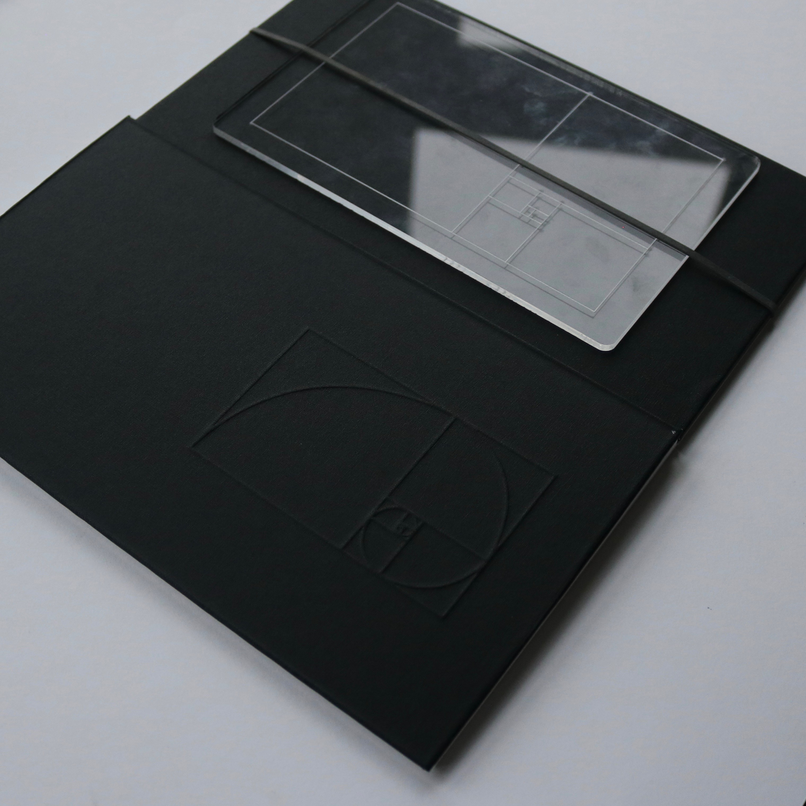

MATHART
(2020)
Mathematics and the Arts are commonly seen as polar opposites. This is because throughout history they have always been separated into different categories. Nevertheless, it is surprising to note that although they have unique aspects, they overlap with each other more often than people think. Mathematical tools have always been used in an essential way for the creation of art. People who enjoy math tend to look for mathematics in art. They want to see the patterns, angles and lines of perspective. For those of us who are creatives it could be useful to look at key mathematical influences that may have been applied to our own work or the works of others. Intricacies of art can often be described using basic math. This book specifically looks at the following mathematical influences: The Golden Ratio, the Rule of Thirds and Perspective.

2021, Ella Staines